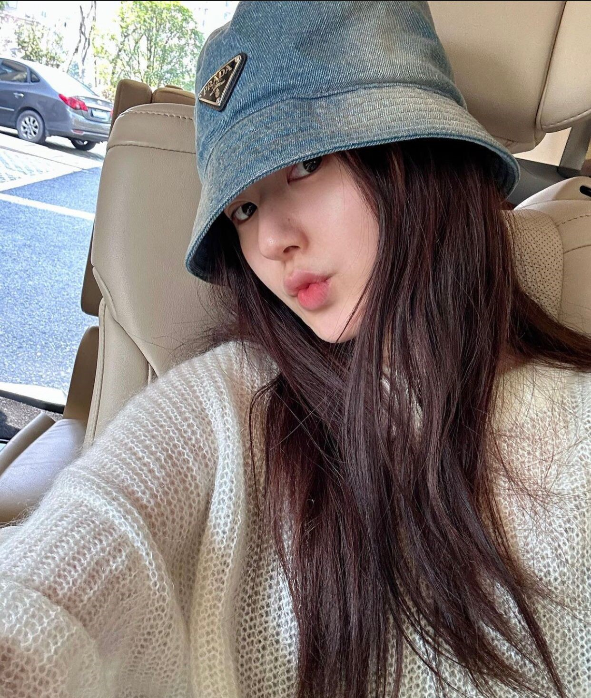
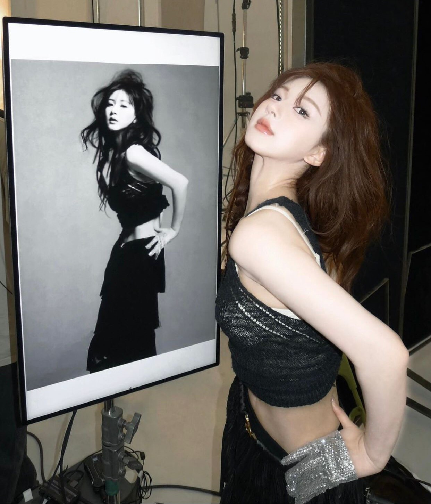
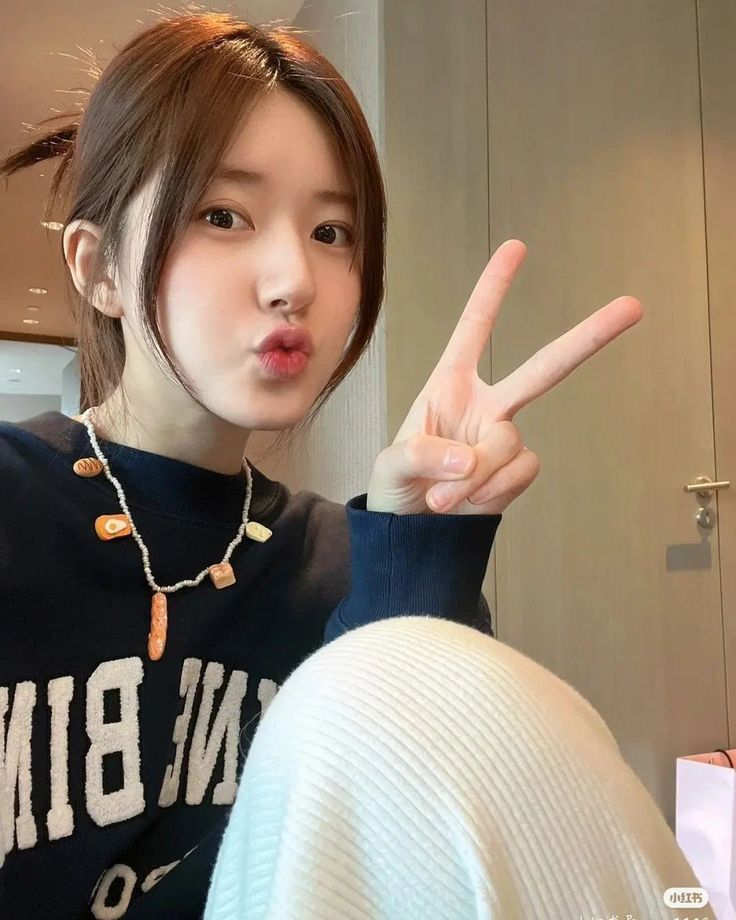
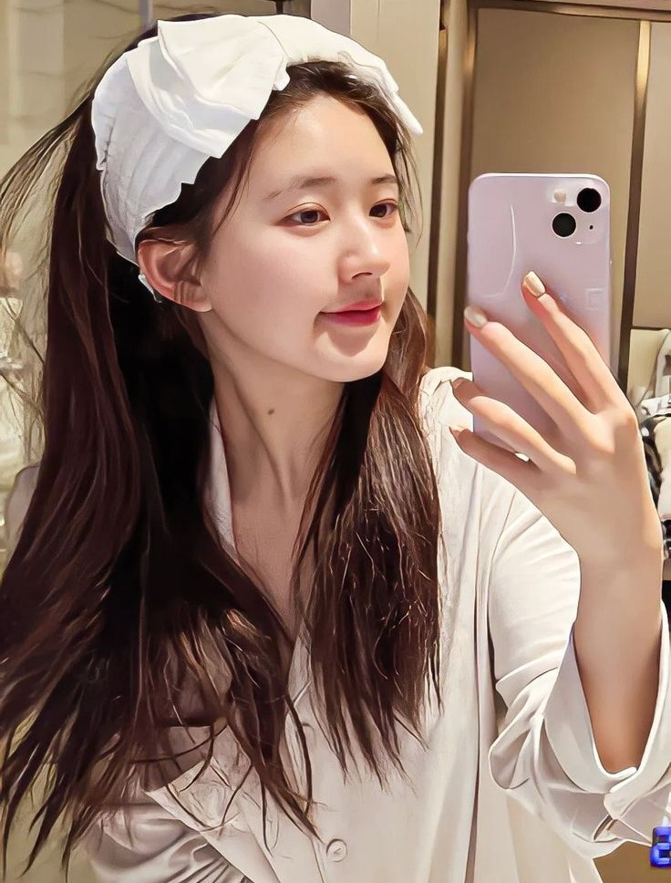
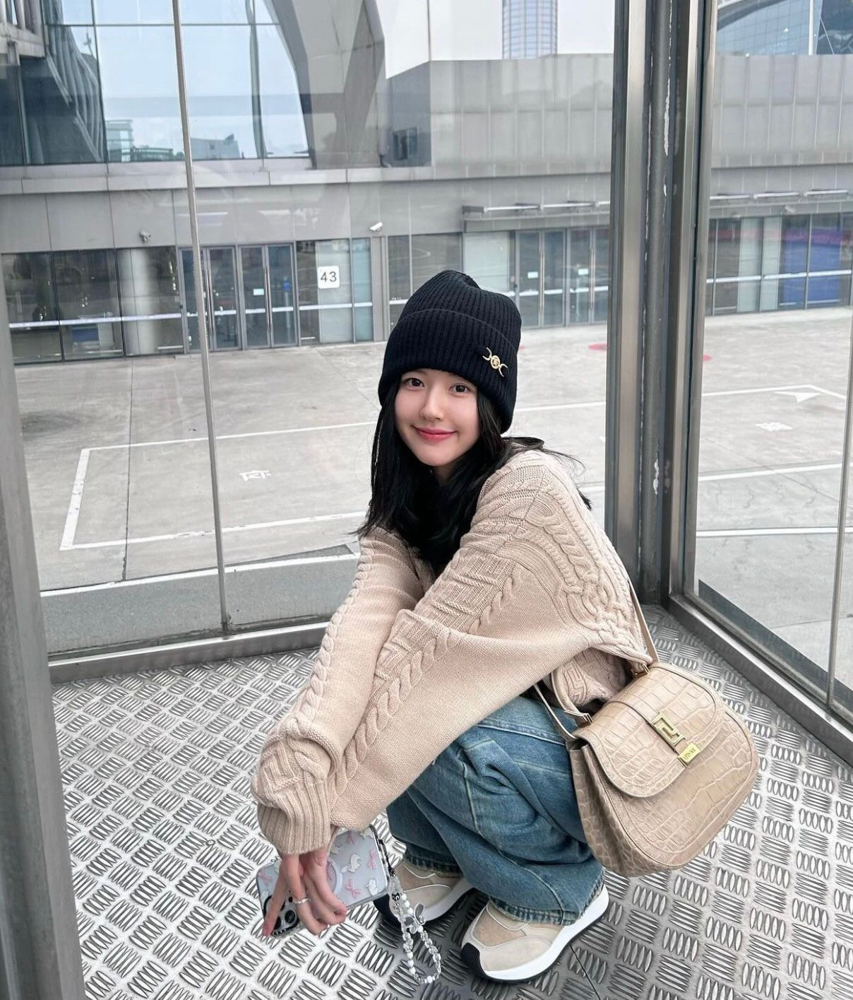

Gallery






Welcome to my world of passion and creativity.
Join me as I continue to explore new horizons in the world of entertainment.
Zhao Lusi is a talented actress hailing from China, renowned for her exceptional roles in numerous popular television dramas. Born with a natural charm and an infectious personality, she has quickly risen to prominence in the entertainment industry. Her versatile acting abilities and dedication to portraying diverse characters have captivated both local and international audiences. Zhao Lusi is known for her roles in dramas like The Romance of Tiger and Rose and Love Like the Galaxy, where she demonstrates her depth and range as an actress.
Outside of acting, Zhao Lusi enjoys exploring new hobbies like photography and traveling, which allow her to express her creativity and connect with different cultures. She is also a fashion enthusiast, often inspiring fans with her unique sense of style. Passionate about continuous self-growth, Zhao Lusi aims to push her boundaries, challenge herself with new roles, and leave a lasting impact in the entertainment world. She looks forward to expanding her career with international collaborations and meaningful projects that resonate with a global audience..